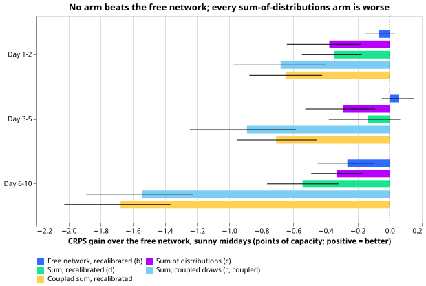
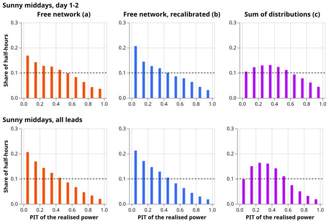
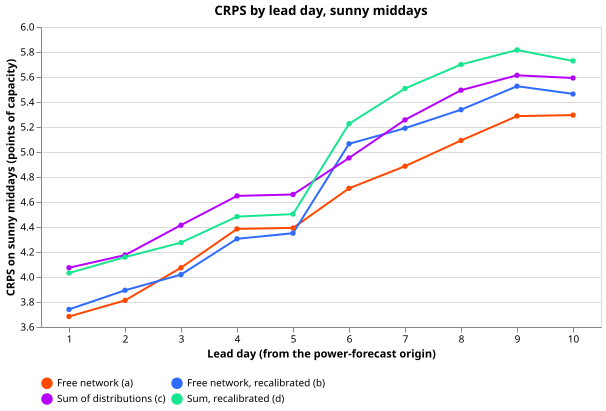
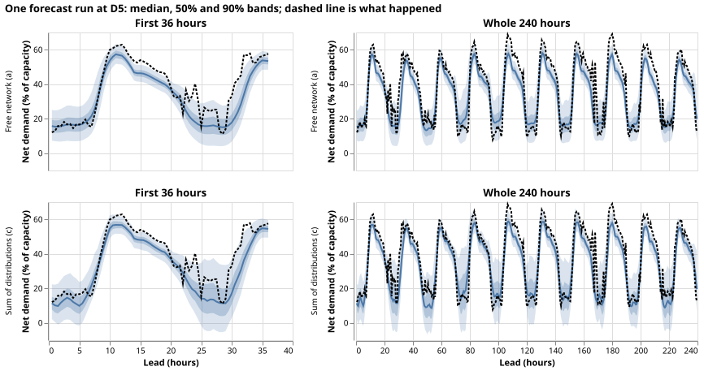

Neither a spread recalibration nor a sum of distributions beats the free network
We asked whether the explicit solar curve helps mainly by getting the width of the net-demand forecast right, rather than by moving its centre. Net demand is the power a substation draws after rooftop solar output has been subtracted, and gross demand is the power before that subtraction. The free neural network is experiment 644's forecasting model, which has weather inputs but no solar curve. We tested two ways to fix the width. The first widens or narrows the free neural network's forecast bands with a map fitted on earlier rows (the recalibration). The second builds the forecast as the gross-demand forecast of experiment 655's neural network minus the solar output of one randomly chosen ensemble member (the sum of distributions). An ensemble member is one of the 51 alternative weather forecasts that the European Centre for Medium-Range Weather Forecasts (ECMWF) issues for each run. Neither approach beat the free neural network.
The free neural network is miscalibrated on sunny middays, but as a one-sided bias, not a wrong width. Sunny middays are the half-hours from 10:00 to 15:00 UTC whose observed clear-sky index is at least 0.7. At lead days 1 to 2, the realised power falls below the network's 5% quantile in 9.3% of those half-hours, and above its 95% quantile in 1.9%. Experiment 655 found that four explicit-solar forms lost to the free neural network. Experiment 664 finds that the loss is not explained by a missing spread.
Scores are the continuous ranked probability score (CRPS; smaller is better) in points, where a point is one percent of a Primary substation's effective capacity. The test half-hours are those in the 60 days after each of three test-window start dates (2025-07, 2026-03, and 2026-06), pooled over the six Primary substations that are metered in MW and over five seeds.
Results

Each arm's CRPS gain over the free network on sunny middays, with 99.9% day-block intervals (a negative gain means the arm is worse). Arm (b) is the recalibrated free network. Arm (c) is the sum of distributions with independent draws, and (d) is arm (c) recalibrated. The last two are the sum with coupled draws and its recalibration. Arm (c0) subtracts the member-average curve, and (p) and (s) are the placebos with another Primary's capacity and another date's curves.

Probability integral transform (PIT) of the realised power in each forecast's distribution: flat at 0.1 would be perfectly calibrated. The free network (a) piles up near 0, meaning the realised power is often below the forecast; recalibrating it (b) does not flatten it on the test months, and the sum of distributions (c) flattens the lowest bin and leaves the same slope.


One forecast run at D5 in the 2026-06 test month, from the free network (top) and the sum of distributions (bottom). The sum of distributions has the wider upper band around the day-time peak and the lower band that dips below zero at night.
Checks
- Decision rule: neither (b) nor (c) beats (a) by the bar, so the rule says to stop. The contrasts below are the control's CRPS minus the arm's, in points, with the Bonferroni interval over 36 contrasts (12 per band, three bands); a negative number favours the control.
- Planned contrasts, sunny middays (bar 0.084, 0.093, 0.123 at day 1-2, 3-5, 6-10):
- free minus recalibrated free (a minus b): -0.07 [-0.15, +0.03], +0.06 [-0.05, +0.15], -0.26 [-0.45, -0.10];
- free minus sum of distributions (a minus c): -0.38 [-0.64, -0.18], -0.29 [-0.53, -0.09], -0.33 [-0.49, -0.17];
- recalibrated free minus sum (b minus c): -0.31 [-0.62, -0.07], -0.35 [-0.62, -0.12], -0.06 [-0.32, +0.19];
- recalibrated free minus recalibrated sum (b minus d): -0.28 [-0.50, -0.09], -0.20 [-0.42, 0.00], -0.28 [-0.44, -0.11].
- Coupled draws (same quantile level for both) are worse still: a minus the coupled sum is -0.68, -0.89, and -1.54, with 5%-95% coverage of 63%, 43%, and 19%. On the fine-tuning rows the correlation between the member-average solar curve and the position of the realised gross demand in its forecast distribution is 0.09 (range -0.04 to 0.17 over the 25 month-and-seed runs), so the independence assumption is close and the coupling is unsupported.
- Placebos pass pooled: The sum of distributions beats the version with another Primary's capacity by 1.84, 1.48, and 0.97 points, and the version with another date's curves by 2.54, 2.02, and 1.05 points (intervals exclude zero). The member solar curve therefore carries information about the centre. At D10 the other-Primary placebo (5.47 points) beats the sum (5.83), so the placebo result does not hold at every Primary.
- What the member draw adds: Against subtracting the member-average curve from the same gross draws (arm c0), the random member costs 0.02 [-0.01, +0.04], 0.06 [+0.02, +0.12], and 0.12 [+0.02, +0.21] points at the three lead bands. The interval widens (coverage 93.1% against 90.0% at lead days 1 to 2) without a better score. The measured correlation between the spread of the member curves and the size of the gross-demand error on the fine-tuning rows is 0.06, so the spread carries little information about the error.
- Coverage on sunny middays (5% to 95%, nominal 90%): free network 88.8%, 88.2%, 87.6% at the three bands; recalibrated 86.6%, 85.1%, 90.3%; sum 93.1%, 94.9%, 96.5%; recalibrated sum 89.6%, 88.0%, 93.5%. Mean 5%-95% width, free network: 23.8, 26.8, and 31.2 points; sum: 27.9, 33.5, and 41.1.
- Tail calibration, sunny middays, all leads (free network / sum): coverage below the 0.01 quantile 2.5% / 0.6%, below 0.05 11.1% / 3.9%, below 0.95 99.2% / 99.2%, below 0.99 99.8% / 99.8%; pinball loss at 0.01, 0.05, 0.95, and 0.99 is 0.174 / 0.190, 0.700 / 0.716, 1.071 / 1.222, and 0.291 / 0.330 points. At the upper tail both arms cover 99.2% below the 95% quantile, so the upper band is too wide.
- PIT distance from uniform (total variation, sunny middays day 1-2): free network 0.176, recalibrated 0.198, sum 0.125, recalibrated sum 0.144. The sum is closer to uniform and still scores worse, because CRPS also rewards a sharp centre.
- Error of the median beside the score: the mean absolute error of the median on sunny middays is 6.42 points for the free network, 6.58 for (b), and 6.84 for (c), so the median and CRPS point the same way (trigger 3 does not fire). The median minus the mean of the 11 quantiles over all half-hours is -0.67 points (free network) and -0.55 (sum).
- Per Primary (CRPS, sunny middays, free network / sum): D5 4.32 / 5.65, D9 4.27 / 4.34, D10 5.61 / 5.83, D11 3.79 / 4.06, D14 3.79 / 4.00, D16 5.33 / 5.19. The sum wins only at D16 (by 0.14); D5 accounts for most of the pooled loss, but leaving D5 out still leaves the sum behind the free network at the other five Primaries on average.
- All half-hours: free minus sum is -0.02 [-0.06, +0.03] and free minus recalibrated free is -0.09 [-0.13, -0.06], so the recalibration also hurts overall.
- Audit triggers: The prediction (a gain of 0.05 to 0.15 points at lead days 1 to 2) was contradicted, which is trigger 2. This page tests three explanations: the explicit curves already lost in experiment 655, the member draw adds width without information, and the bias is one-sided. The tests are the arm that subtracts the member-average curve from the same gross draws (arm c0), the placebos, and the PIT histograms. The two placebos lose pooled, and the median and CRPS agree. Leaving D5 out does not flip the sign. No audit was run. The free network's CRPS of 3.75, 4.28, and 5.05 points reproduces experiment 655's values exactly.
- Reviews: a fresh Sonnet agent reviewed the code before the first full run. It found no bug that biases the comparison; two findings were applied (clip the recalibrated levels to [0.001, 0.999], assert the fine-tuning leads lie in 0 to 360 hours), and one finding was accepted as a caveat (below).
- Caveats: arms using draws (c, d, and the coupled and placebo arms) rest on 2,000 draws per row, so their 0.01 and 0.99 quantiles use about 20 draws each and carry sampling noise that arms (a) and (b), computed from the exact mixture, do not; the median check against experiment 655's stored arm d differs by 0.13 points on average, consistent with that noise. The recalibration cells use the ensemble forecast's clear-sky index, pool the six Primaries, and use at least 2,733 held-out fine-tuning rows each; none fell back to a pooled cell.
Method
- Architecture:
- Arm (a) is experiment 644's free network, a modular mixture-density neural network (three Gaussian components) whose fresh fine-tuning mixer reads the ensemble-mean weather, date-time, and ensemble-spread columns and the lead time; it is read from its stored weights.
- Arms (c) onward use experiment 655's arm d network, trained on gross demand (the target plus capacity times the member-average cell-temperature solar curve, with the calibrated season-year probe capacity of experiment 644's arm b), from its stored weights.
- The sum of distributions (c) draws 2,000 gross-demand values from arm d's mixture per row and subtracts the solar curve of an independently drawn ensemble member (curve per member, cell temperature, 655's physics); (c, coupled) sorts both sets of draws and pairs them.
- Training regime: nothing is trained. Both neural networks come from experiments 644 and 655 (monthly fine-tuning on the 24 months before each test month, five seeds); the per-member curves are recomputed from the 51-member extract of experiment 655 and match its member-average table. GPU time for this experiment is under 0.2 hours.
- Measurement:
- Rows, cutoffs, and the five seeds are experiment 644's (the code asserts the row keys), with cleaned power and the six MW Primaries; weather is the ensemble forecast, available at forecast time.
- The recalibration maps level
tauto thetau-quantile of the held-out fine-tuning rows' PITs in each of six cells (lead band by forecast sunny call), applied to the arm's own distribution. It uses fine-tuning rows only. - CRPS comes from the 11 quantiles; intervals are day-block bootstraps at the Bonferroni level for 36 contrasts; the bars are experiment 644's.
- Placebos are applied at forecast time only (the network is not refitted).
Files
ml-experiments/00664-pv-sum-of-distributions-spread-and-recalibration/:e00664_members.py(member curves),e00664_run.py(arms and recalibration),e00664_analyse.py(scores and contrasts),e00664_report.py(figures),run.sh.- Stored predictions:
data/ml-experiments/00664-pv-sum-of-distributions-spread-and-recalibration/work/preds/.